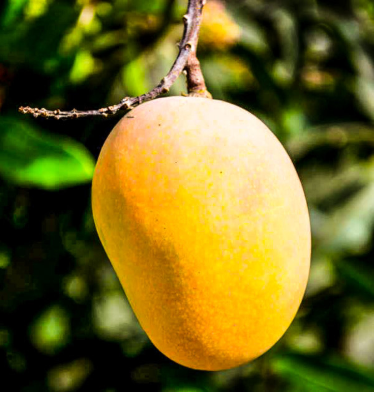

1. State Fruit: Mango (Mangifera indica)
Scientific Name: Mangifera indica.
Cultural Significance: The mango is deeply embedded in Telangana's culture and is often associated with prosperity and abundance. It is commonly used in religious ceremonies and festivals.
Ecological Importance: Mango trees are known for their ability to provide shade and improve air quality. They are also important for supporting biodiversity by providing food for birds and insects.
Traditional Uses: The fruit is widely consumed fresh, dried, or processed into jams, juices, and sweets. The wood of the mango tree is used in construction and furniture making.